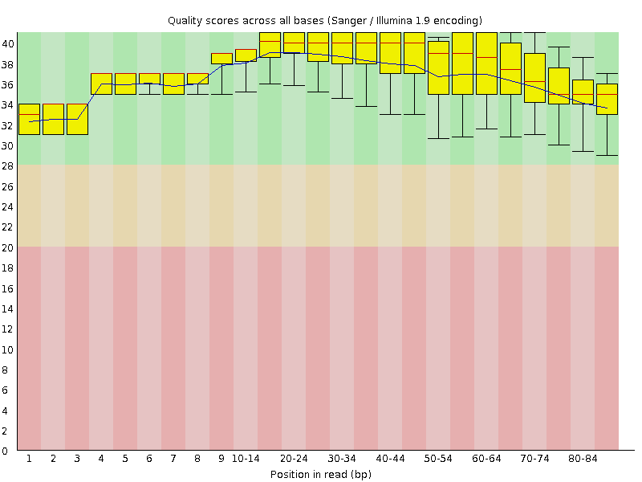
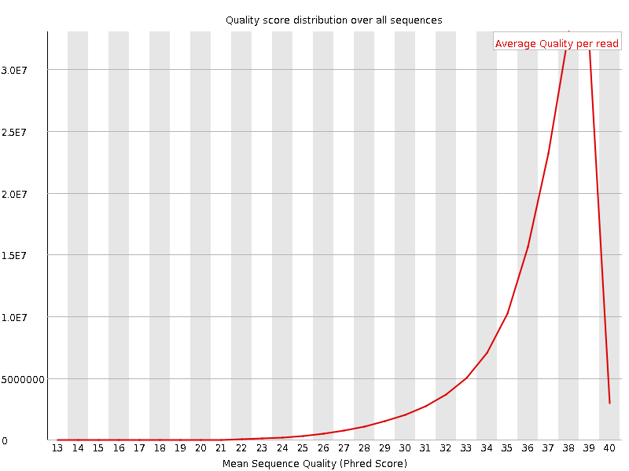
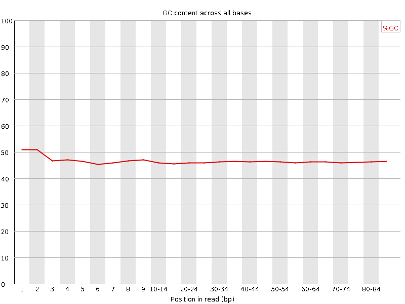
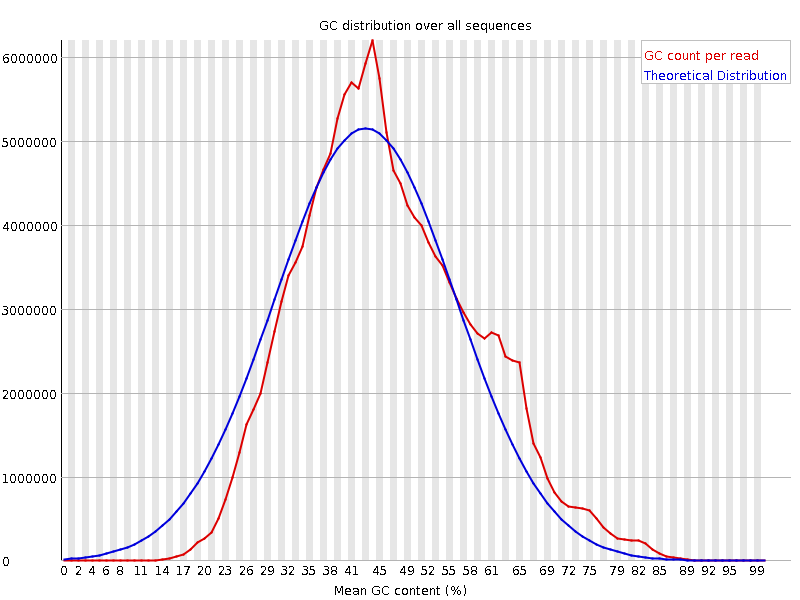
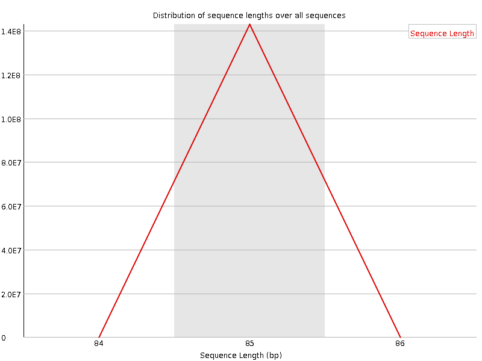
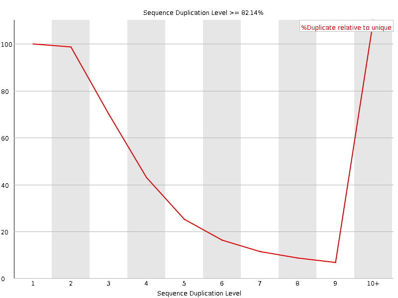
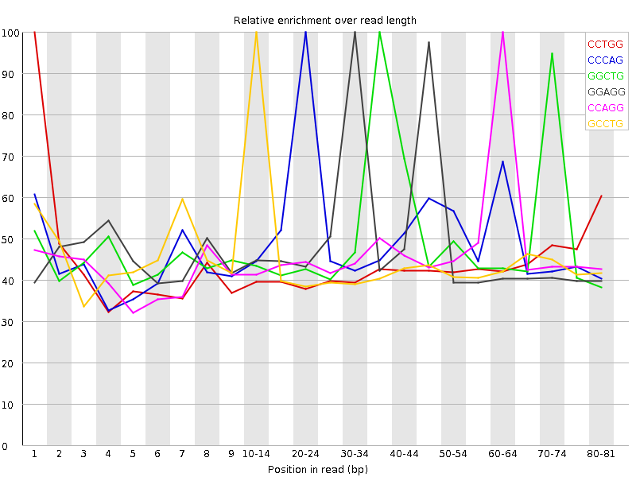

![[OK]](Icons/tick.png) Basic Statistics
Basic Statistics
| Measure | Value |
|---|---|
| Filename | SRR534335_pe_2.f.fastq |
| File type | Conventional base calls |
| Encoding | Sanger / Illumina 1.9 |
| Total Sequences | 142891462 |
| Filtered Sequences | 0 |
| Sequence length | 85 |
| %GC | 46 |
Per base sequence quality

Per sequence quality scores

Per base sequence content

Per base GC content

![[WARN]](Icons/warning.png) Per sequence GC content
Per sequence GC content

Per base N content

Sequence Length Distribution

![[FAIL]](Icons/error.png) Sequence Duplication Levels
Sequence Duplication Levels

Overrepresented sequences
| Sequence | Count | Percentage | Possible Source |
|---|---|---|---|
| CGGTGGCGCGTGCCTGTAGTCCCAGCTACTCGGGAGGCTGAGGCTGGAGG | 541805 | 0.3791724098952812 | No Hit |
| CGGTGGCGCGTGCCTGTAGTCCCAGCTACTCGGGAGGCTGAGGTGGGAGG | 502588 | 0.35172710319109196 | No Hit |
| CCTGGCCTTTCTATTAGCTCTTAGTAAGATTACACATGCAAGCATCCCCG | 406936 | 0.28478678453160483 | No Hit |
| CCCAAACCCACTCCACCTTACTACCAGACAACCTTAGCCAAACCATTTAC | 291392 | 0.2039254101830101 | No Hit |
| CTGGCCTTTCTATTAGCTCTTAGTAAGATTACACATGCAAGCATCCCCGT | 274251 | 0.19192959198639875 | No Hit |
| GGTGGCGCGTGCCTGTAGTCCCAGCTACTCGGGAGGCTGAGGCTGGAGGA | 217919 | 0.15250666271438948 | No Hit |
| GGTGGCGCGTGCCTGTAGTCCCAGCTACTCGGGAGGCTGAGGTGGGAGGA | 207281 | 0.14506185121123613 | No Hit |
| CAAACCCACTCCACCTTACTACCAGACAACCTTAGCCAAACCATTTACCC | 169997 | 0.11896931952449337 | No Hit |
| GGCCTTTCTATTAGCTCTTAGTAAGATTACACATGCAAGCATCCCCGTTC | 163487 | 0.11441341400789923 | No Hit |
Kmer Content

| Sequence | Count | Obs/Exp Overall | Obs/Exp Max | Max Obs/Exp Position |
|---|---|---|---|---|
| CCTGG | 27203095 | 3.0164275 | 6.9973893 | 1 |
| CCCAG | 26035235 | 3.0043404 | 5.8482647 | 20-24 |
| GGCTG | 25356695 | 2.7173657 | 5.2617464 | 35-39 |
| GGAGG | 24205220 | 2.5213861 | 5.04933 | 30-34 |
| CCAGG | 22549795 | 2.5148442 | 5.29145 | 60-64 |
| GCCTG | 21710985 | 2.4074323 | 5.2609267 | 10-14 |
| CTGGG | 22450295 | 2.4058995 | 5.2427707 | 70-74 |
| CCAGC | 20162295 | 2.3266313 | 5.4555497 | 20-24 |
| CTGGC | 20370360 | 2.2587767 | 6.3339996 | 2 |
| GGTGG | 18401190 | 1.9058214 | 11.707821 | 2 |
| TGGCC | 16654720 | 1.8467661 | 5.7178984 | 3 |
| ACCCA | 16134765 | 1.6452396 | 5.3243766 | 6 |
| GTGGC | 15062570 | 1.6141894 | 11.51956 | 3 |
| GGCCT | 14337780 | 1.5898513 | 5.471665 | 4 |
| GTGCC | 12740240 | 1.4127072 | 5.512756 | 9 |
| AGTGC | 13039960 | 1.2348396 | 5.66827 | 80-81 |
| GGCGC | 9640625 | 1.2167319 | 12.885574 | 5 |
| TGGCG | 8491500 | 0.90999675 | 10.807246 | 4 |
| GCGCG | 6681485 | 0.8432623 | 12.449055 | 6 |
| CGTGC | 7115785 | 0.78903705 | 11.325995 | 9 |
| GCGTG | 7075160 | 0.7582138 | 10.738888 | 8 |
| CGGTG | 6718900 | 0.720035 | 11.108977 | 1 |
| GTGCG | 6392235 | 0.6850278 | 7.508537 | 80-81 |
| CGCGT | 3805070 | 0.42192692 | 10.6432495 | 7 |